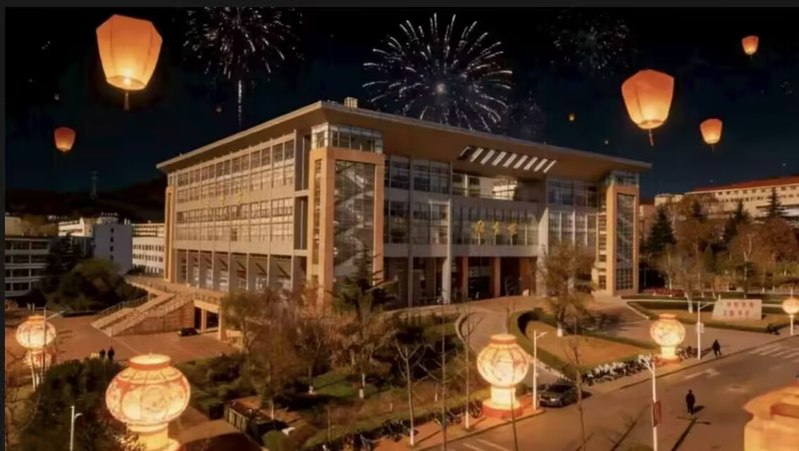

秋意漫过鲁东大学的山峦，把学术中心的红瓦染成了暖调。银杏叶在风里簌簌飘落，铺成一条金色的小径，通往藏着书香的楼宇。
远处的青山依旧苍翠，却在秋阳里晕开了淡淡的橙黄，像是被时光轻轻吻过的画布。图书馆前的梧桐摇落满枝碎金，每一片叶子都写着秋日的私语，落在学子们匆匆的步履间。
风里带着桂花的甜香，混着书页的墨气，在校园的每一个角落流转。清晨的薄雾还未散尽，阳光便穿过枝叶，在石阶上投下斑驳的光影，温柔地唤醒这座沉淀着岁月的校园。
鲁大的人文景观，藏在红瓦与绿树的交织里。学术中心的庄重，钟楼主楼的挺拔，图书馆的灯火通明，都在诉说着“学在鲁大”的初心。
白日里，学子们在楼宇间穿梭，把理想写进笔记；夜晚，图书馆的灯光与孔明灯交相辉映，照亮了每一个为梦想奔赴的身影。这里的一砖一瓦，都承载着百年的学风，在秋意里愈发醇厚。

